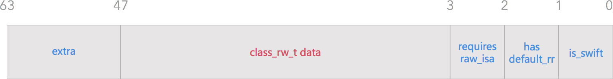

目录：
- 方法的存储
class_data_bits结构体class_rw_t和class_ro_t结构体- 从
realizeClass看方法的存储 - 相关源码
class_data_bits 结构体
正如上篇文章提到的一样，方法储存在obj_class的class_data_bits类型的结构体里
|
|
class_data_bits 结构体：
|
|
下面我们来看下这里的bits每一位的含义：
注意到在objc_class注释里写的 class_data_bits_t 相当于 class_rw_t 指针加上 rr/alloc 的标志。而在class_data_bits_t的方法中可以看到下面这个方法便捷的返回class_rw_t * 指针
|
|
可以看出 class_rw_t * 指针的地址从第3到第47位

而bits的其他位：
|
|
isSwift()``FAST_IS_SWIFT用于判断 Swift 类hasDefaultRR()``FAST_HAS_DEFAULT_RR当前类或者父类含有默认的retain/release/autorelease/retainCount/_tryRetain/_isDeallocating/retainWeakReference/allowsWeakReference方法requiresRawIsa()``FAST_REQUIRES_RAW_ISA当前类的实例需要 rawisa
注：通过 objc_class 中的 data() 方法和 class_data_bits_t 中的 data() 方法返回的是同一个class_rw_t *指针
class_rw_t和class_ro_t结构体
class_rw_t源码
|
|
可以看到:
这里面存储着属性(properties)、方法(methods)、遵循的协议(protocols)
同时这内部还有一个指针叫做ro，类型为class_ro_t
我们再来看下class_ro_t的源码
class_ro_t源码
|
|
发现这两个有点像也有属性、方法、协议
从字面上就可以理解这两个的差别：
- ro：read only。存储的是当前类在编译期间就已经确定的属性(baseProperties)、方法(baseMethodList)以及遵循的协议(baseProtocols)
- rw：read write。存储的是一些自己实现的方法（包括分类）(methods)、属性(properties)、以及遵循的协议(protocols)
要想深入理解方法的存储可以看下class_ro_t和 class_rw_t在加载ObjC运行时是怎么调用的，可以找到 realizeClass 这个方法
从realizeClass看方法的存储
主要看下方法内部class_ro_t和 class_rw_t相关的部分：
|
|
主要的步骤：
- 从
class_data_bits_t调用data方法，将结果从class_rw_t强制转换为class_ro_t指针 - 初始化一个
class_rw_t结构体 - 设置结构体
ro的值以及flag - 最后设置正确的
data。
从这里可以get到：
realizeClass 方法执行前

realizeClass 方法执行后

实际上：
- 在编译期间类的结构中的
class_data_bits_t *data指向的是一个class_ro_t *指针 - 在加载运行时代码运行
realizeClass之后，class_data_bits_t *data才指向class_rw_t指针。
但此时方法，属性以及协议列表均为空。这时需要 realizeClass 调用 methodizeClass 方法来将类自己实现的方法（包括分类）、属性和遵循的协议加载到 methods、 properties 和 protocols 列表中
备注：
realizeClass主要作用是对类进行第一次初始化包括
- 分配可读写数据空间（
class_rw_t） - 返回真正的类结构（
Class）
|
|
相关源码
TODO:补充相关代码解析注释
方法结构体
|
|
属性结构体
|
|
协议结构体
|
|